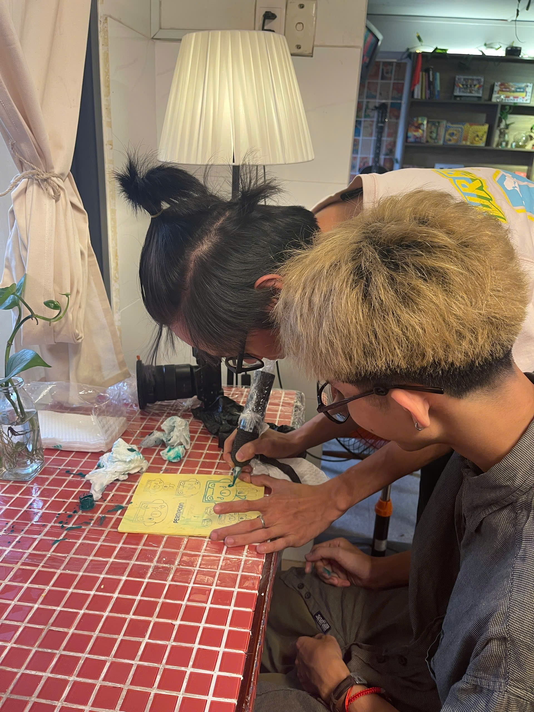
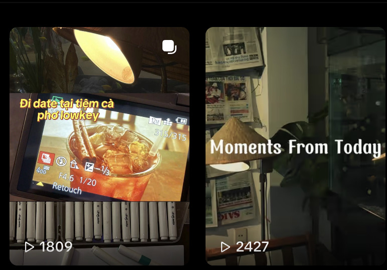

Do Rao
Beverage brand building, menu formulation, and multichannel communication management.
Shape a vintage-inspired coffee space blending artisanal beverage recipes with community workshops to engage young customers.
Real F&B venture founded and directly operated by myself.


My Role
- Brand Concept Founder & Developer
- Beverage Menu Research & Formulation (Roast Coffee, Matcha, Fruit Teas)
- Vintage Interior Styling & Marketing Collateral Design
- Collaborative Workshop Organization with Rowena Tattoo
Execution Strategy
- Creating a nostalgic atmosphere with traditional phin filters and books
- Pairing beverages with experiential activities: henna art, board games
- Driving organic growth via social media and word-of-mouth
Data & Tools
- Achieved 550 – 600 stable monthly orders
- Average revenue: 15 – 18 million VND/month
- Canva, CapCut, Microsoft Office, KiotViet for internal accounting
Results Achieved
- Built a loyal customer base ranging from 16 to 35 years old
- Established a cultural hub for youth appreciating vintage aesthetics
- Maintained steady profit margins and optimized operating costs
Brand Building & Menu Formulation
| Category | Execution Details | Strategic Objective |
|---|---|---|
| 1. Brand Concept Styling | Retro/vintage aesthetic featuring traditional cultural elements (red plastic stools, coffee phin, cozy chill corners) | Create distinct differentiation and a warm, familiar feel for visitors |
| 2. Beverage Menu Development | In-depth R&D for artisanal roast coffee, matcha, houjicha, cold brew, and handmade fruit teas | Ensure consistent flavor quality and meet young consumers' tastes |
| 3. Workshops & Activities | Combining beverage service with hands-on experiences: henna art, board games, movie screenings, and arts exchange | Increase dwell time and encourage word-of-mouth referrals |
Operating model centered around rustic experiences and genuine community connection.
Operational Efficiency & Growth Metrics
“Customers come to Do Rao not just for a cup of coffee or fruit tea, but for a slower space to chat, reminisce, and reconnect amidst the rush of urban life.”
- →Research and develop seasonal beverage recipes
- →Manage cash flow, calculate raw material costs, and oversee staff
- →Brainstorm marketing concepts and directly execute workshop events
Running an F&B venture requires patience and tight financial balancing between fixed costs, ingredients, and actual profit margins per cup sold.
Though the project has concluded, I believe the core values of rustic space, artisanal recipes, and genuine community bonding from Do Rao will serve as invaluable preparation for my future F&B and Marketing endeavors.